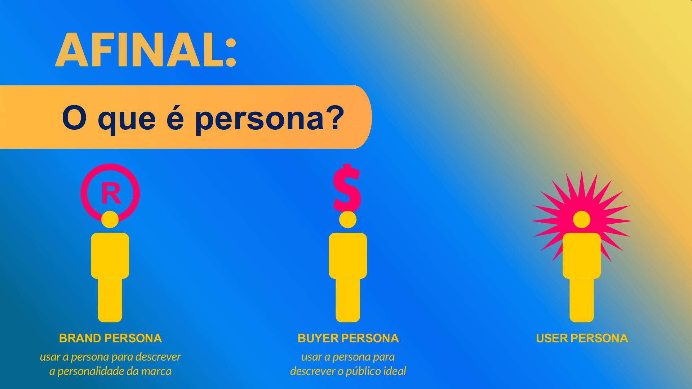
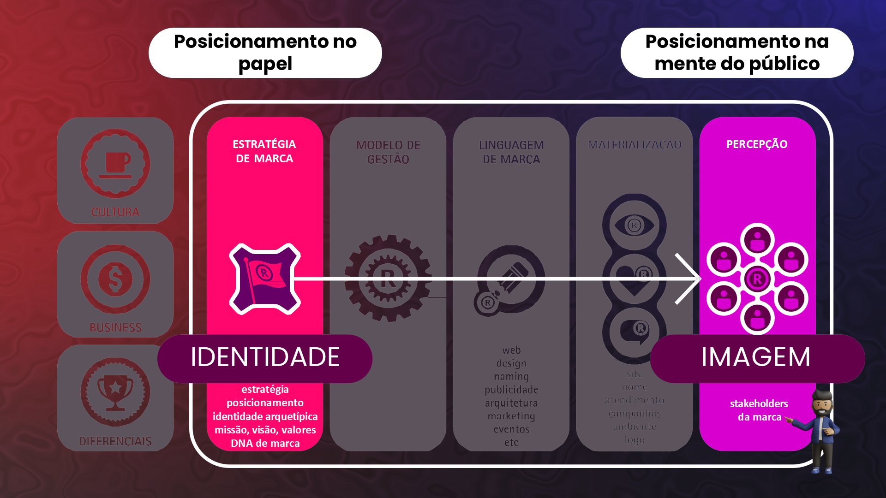
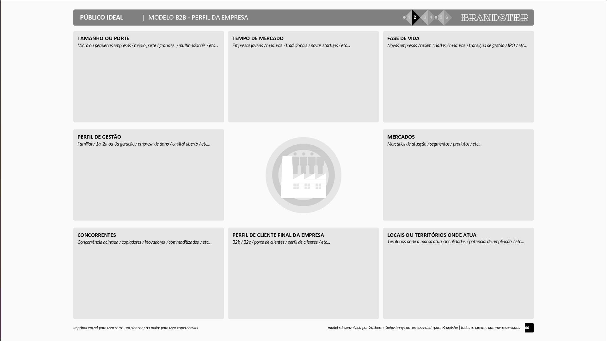

flowchart TB
A["Produtor Rural"] -->|B2B| B["Cooperativa / Trader"]
B -->|B2B| C["Agroindústria"]
C -->|B2B| D["Distribuidor / Atacado"]
D -->|B2B| E["Varejo / Food Service"]
E -->|B2C| F["Consumidor Final"]
style A fill:#2e7d32,color:#fff
style F fill:#1565c0,color:#fff
11 Branding B2B no Agronegócio
A maioria das transações no agro é B2B, de produtor para cooperativa, de cooperativa para indústria, de indústria para varejo. No entanto, a gestão de marca no B2B agrícola é quase inexistente. Este capítulo mostra por que e como isso precisa mudar.
11.1 O agro é, fundamentalmente, B2B

Embora o consumidor final leve o alimento para casa, a cadeia até ele é predominantemente B2B:
Em cada elo dessa cadeia, a marca pode estar presente, ou ausente. Quando ausente, o valor se concentra nos elos finais (varejo e indústria), que constroem suas próprias marcas sobre o produto genérico do elo anterior.
11.2 Diferenças entre marca B2B e marca B2C
| Aspecto | B2C | B2B no Agro |
|---|---|---|
| Decisão de compra | Emocional + racional | Racional + relacional |
| Ciclo de venda | Curto (minutos a dias) | Longo (semanas a meses) |
| Volume por transação | Pequeno | Grande |
| Número de decisores | 1-2 | Múltiplos |
| Importância do relacionamento | Média | Alta |
| Recorrência | Variável | Alta (safra, contrato) |
| Pontos de contato | Embalagem, PDV, digital | Reunião, amostra, visita técnica, contrato |
Essas diferenças implicam que o branding B2B no agro precisa enfatizar a confiabilidade e consistência (o comprador B2B não pode errar, pois um lote fora do padrão afeta toda a operação dele), o relacionamento de longo prazo (contratos de fornecimento duram safras inteiras), a capacidade de entrega (volume, pontualidade, logística) e a credibilidade técnica (laudos, certificações, dados de qualidade).
11.3 Por que investir em marca B2B no agro
11.3.1 1. Reduz a dependência do preço
Sem marca, a negociação B2B é exclusivamente sobre preço. Com marca reconhecida, o comprador aceita pagar mais por um fornecedor de confiança, com histórico de entrega e qualidade consistente.
11.3.2 2. Facilita o acesso a novos canais
Uma marca B2B forte funciona como cartão de visita. O distribuidor, a rede de varejo ou o restaurante que reconhece a marca abre portas que um fornecedor genérico não conseguiria.
11.3.3 3. Protege em momentos de crise
Quando há quebra de safra, problema logístico ou oscilação de preço, o comprador B2B que confia na marca mantém o relacionamento. O fornecedor sem marca é substituído na primeira oportunidade.
11.3.4 4. Gera indicações e reputação setorial
No mercado B2B, a reputação circula. Um comprador satisfeito indica para outros. Um fornecedor reconhecido em feiras e eventos do setor atrai oportunidades espontâneas.
11.4 Pontos de contato B2B no agro
Os pontos de contato no B2B são diferentes do B2C. Cada um é uma oportunidade de marca:
Pontos de contato corporativos incluem o nome da empresa ou marca, o logotipo e identidade visual, o site institucional com informações técnicas e comerciais, o material de apresentação (digital e impresso) e o cartão de visitas com assinatura de e-mail padronizada.
Pontos de contato comerciais abrangem a proposta comercial (formato, conteúdo, apresentação), a amostra de produto (embalagem, identificação, material acompanhante), a reunião de negociação (preparação, ambiente, postura) e o contrato com suas condições comerciais.
Pontos de contato de relacionamento compreendem o atendimento pós-venda e suporte, a comunicação regular (atualizações de safra, lançamentos), os convites para eventos e visitas à propriedade e a presença em feiras e congressos do setor.
Pontos de contato técnicos englobam laudos de qualidade e análises laboratoriais, certificações e documentação técnica, relatórios de rastreabilidade e fichas técnicas de produto.
DicaO detalhe que diferencia
No B2B, os detalhes importam desproporcionalmente. Uma proposta comercial bem diagramada, uma amostra enviada com identificação profissional, um e-mail com assinatura padronizada, cada detalhe reforça (ou enfraquece) a percepção de profissionalismo e confiabilidade.
11.5 Stakeholders da marca B2B agropecuária

A marca B2B precisa ser gerida junto a múltiplos públicos, desde os clientes diretos (compradores, traders, indústrias, varejo) e canais de distribuição (representantes, corretores, plataformas) até os fornecedores de insumos (cuja percepção afeta condições comerciais), os funcionários (que são embaixadores da marca e precisam entendê-la e vivê-la), as entidades do setor (associações, sindicatos, conselhos), as instituições financeiras (pois uma marca forte facilita acesso a crédito) e os órgãos reguladores (já que boa reputação facilita processos de certificação e licenciamento).
11.6 Marca corporativa no agro: produtora vs. produto

No B2B, existe uma distinção crucial entre a marca do produtor ou empresa (a reputação da fazenda, cooperativa ou agroindústria como organização) e a marca do produto (o produto específico que é comercializado).
Muitas vezes no agro B2B, a marca do produtor é mais forte que a do produto. O comprador não compra “café tipo X”, compra “café da Fazenda Y”, porque confia na Fazenda Y.
Isso torna a marca corporativa o principal ativo no B2B agrícola. Investir na reputação institucional, profissionalismo, confiabilidade, transparência, relacionamento, é investir no ativo que sustenta toda a operação comercial.
11.7 Exercício prático, Branding B2B
11.7.0.1 🌿 Ferramenta: Diagnóstico de Marca B2B Agro
1. Pontos de contato, Avalie cada um como forte, regular ou fraco:
| Ponto de contato | Avaliação | O que melhorar? |
|---|---|---|
| Site institucional | ||
| Material de apresentação | ||
| Proposta comercial | ||
| Embalagem de amostras | ||
| Atendimento pós-venda | ||
| Presença em feiras | ||
| Assinatura de e-mail | ||
| Fichas técnicas |
2. Percepção, Se perguntasse aos seus 5 principais clientes B2B:
- “Como descreveriam sua empresa em 3 palavras?”
- “Por que continuam comprando de você?”
- “O que mudariam na sua forma de operar?”
3. Diferencial B2B:
- O que os seus clientes valorizam em você que não encontram em outros fornecedores?
- Você comunica esse diferencial de forma explícita e consistente?